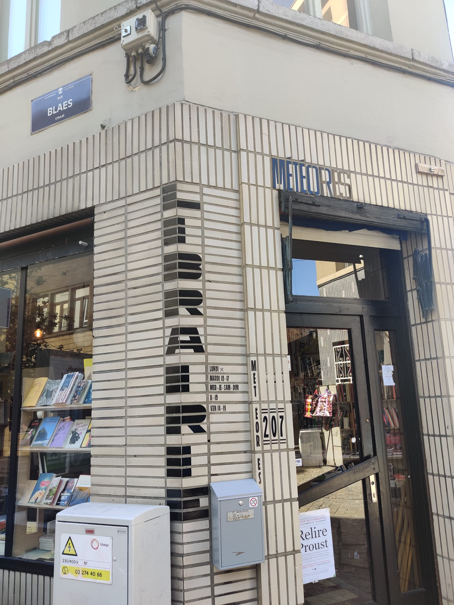

Ik heb deze foto genomen tijdens de introductieweek in Brussel. De
locatie is dichtbij de rommelmarkt waar we de opdracht hadden
gekregen om 30 foto’s te maken van verschillende lettertypes. Dit
woord ‘Librarie’ viel me op omdat het door middel van zwarte tegels
in elkaar is gezet. Ik vind het opmerkelijk dat ze de hoek van het
gebouw hebben genomen, dit geeft de letters een 3D-effect.
KENMERKEN
Als je kijkt naar de letters valt het direct op dat ze geen schreven
hebben, oftewel het valt onder de categorie ‘sans’. Dit is een
duidelijke indicatie dat het gebaseerd is op een relatief moderne
lettertype. Alle lettertypes vóór 1800 waren geschreven met
schreven, dus dit was een grote stap om te achterhalen uit welke
tijdperiode het komt. Verder is het opmerkelijk dat de lettertype
erg dik is. De letters ‘B’en ‘R’ hebben geen eens gaten, waardoor
het extra dik lijkt. Dit is een kenmerk dat erg veel gebruikt werd
in het midden van de 19e eeuw. De ‘Bold type’ kwam namelijk voort
uit de industriële revolutie en de oorsprong van advertenties. De
eerste dikgedrukte lettertypes waren gemaakt met de intentie om de
aandacht van de lezers te trekken. Dit is op een logische manier
ontwikkeld, want hoe groter en dikker de letters, hoe meer aandacht
het aantrekt.
